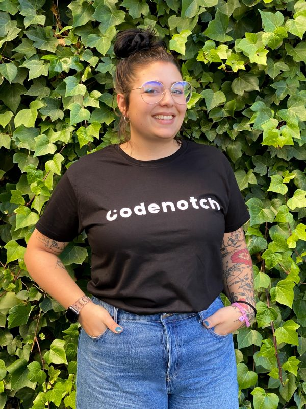
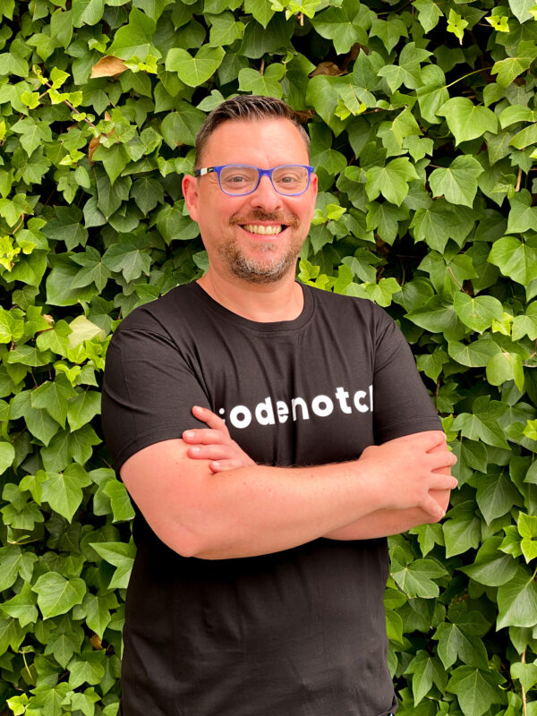

Carmen Martín
Menchu comenzó graduándose en bellas artes. Decidió redirigir su carrera profesional hacia el mundo del diseño web, combinando así sus pasiones por el arte y la tecnología.
Dio sus primeros pasos en el diseño web de forma autodidacta, logrando así sus primeros empleos como diseñadora freelance.
Tiene conocimientos en UX/UI y maneja herramientas como HTML, CSS, Angular, React o Wordpress. Aptitudes como el trabajo en equipo, la gestión y el liderazgo la definen.

José Herrera
José es Doctor y Profesor en la facultad de informática de la Universidad Complutense de Madrid.
Ha trabajado como desarrollador en Banco Santander;como jefe de proyecto durante 4 años en el Banco ING y como ingeniero de investigación en el IMDEA Networks, siendo responsable de varios proyectos europeos, y desempeñando tareas de analista y programador.

Daniel Vera
Daniel decidió dejar su trabajo en el mundo de la hostelería para apostar por lo que realmente le motivaba, apostó por formarse como desarrollaodr Full Stack y eso hizo que cambiara su vida por completo. Ahora es un apasionado de la tecnología que está en constante aprendizaje y disfruta de ayudar a otros a aprender.
Aún siento un perfil completo, sigue formándose día a día con nuevas metodologías y herramientas. Algunas de las tecnologías que domina son, JavaScript, TypScript, Java, HTML5, CSS, Node.js, GIT, Angular, SQL, entre otras.